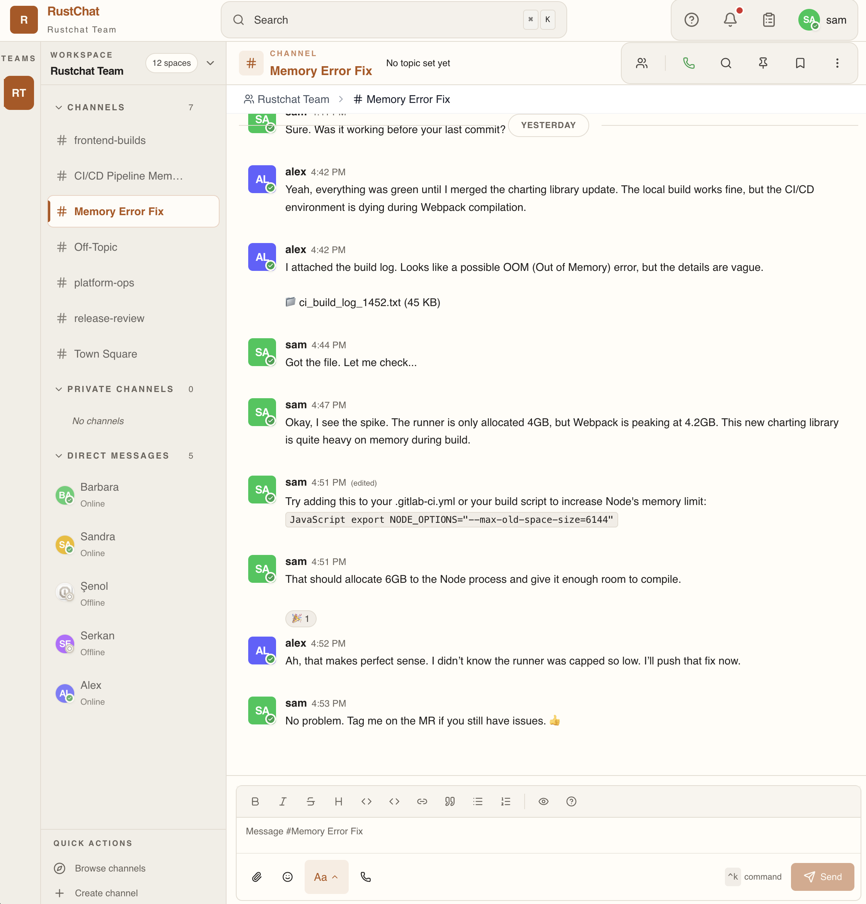
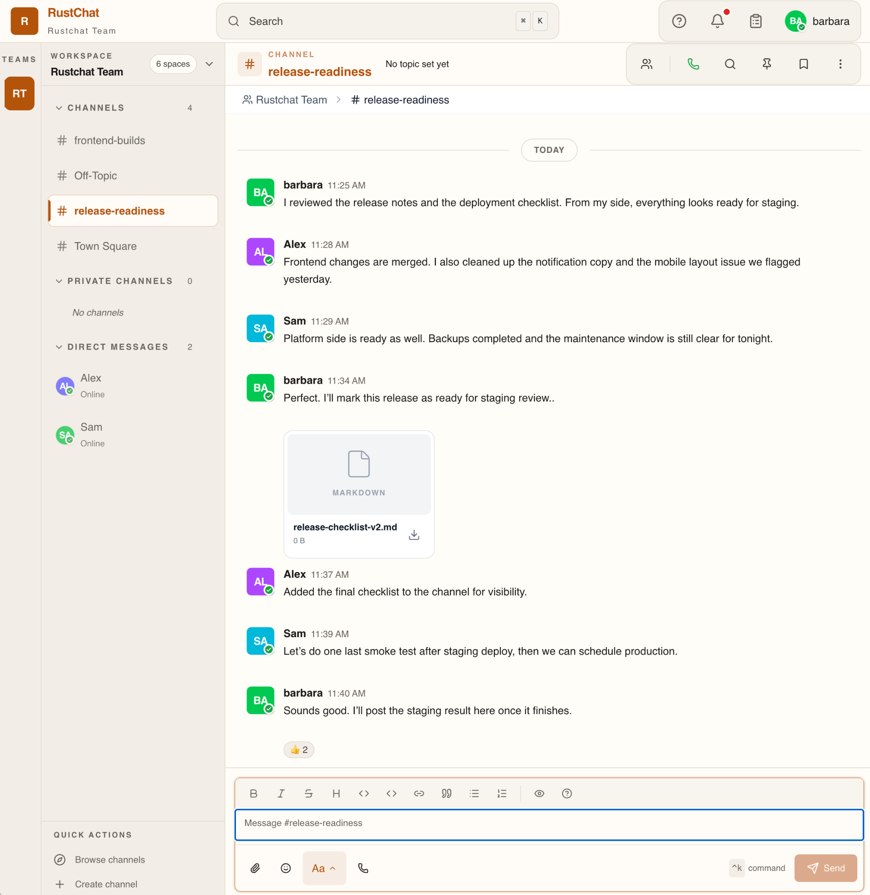
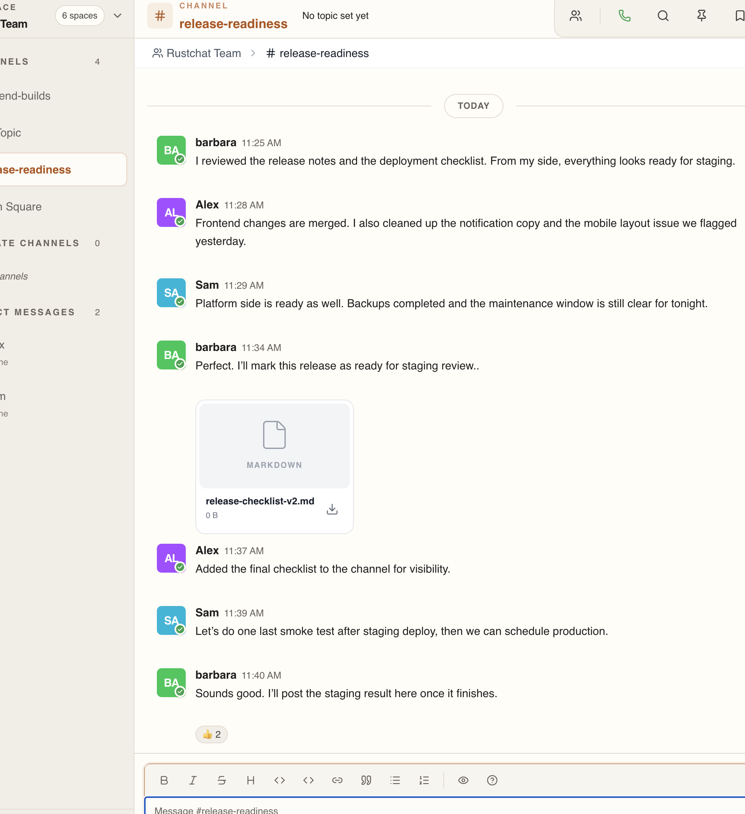
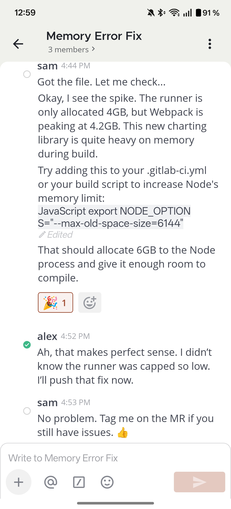

Self-hosted collaboration, built for control.
RustChat is a self-hosted team communication tool for technical teams that want control over their internal conversations. It captures live company signal and forms part of Kubedo’s open-source company memory infrastructure.
RustChat is currently available as a public preview for self-hosted evaluation, technical feedback, and early design partner discussions.

A Collaboration Workspace You Control
Built for teams that want clear communication, direct ownership, and a service they can run on their own terms.
Persistent internal logs.
Maintain a reliable record of team decisions with standard message logging and basic search indexing for knowledge retrieval.
Native Markdown & Code.
Supports syntax highlighting, standard code blocks, and simple media attachments right in the chat.

Infrastructure Control
Keep your communication stack entirely within your own perimeter. Deploy on-premise or in your private cloud.
Sensible Workflow
Group context easily with threaded discussions, inline code snippets, and simple continuous integration hooks.
Open Source Foundation
Built openly. Inspect the source, compile the binary yourself, and verify the infrastructure your team relies on.
Streamlined team communication
Support your daily operations with fundamental features designed for cross-platform reliability.
Organized Messaging
Keep the conversation clear with threaded replies, markdown text support, and standard channel permissions.

Mobile Access
Stay connected away from the desk with a responsive mobile interface and standard push notifications.

Basic File Sharing
Share documents within your infrastructure. Keep technical logs and project files accessible directly inside the context of your chat.
Operational Visibility
Access server logs and view basic resource usage to monitor the health of your self-hosted deployment.
Open source and public
Inspect the codebase, review our issue tracker, and see how RustChat is developed.
Technical Foundation
RustChat leverages modern asynchronous I/O to handle team messages with a predictable memory footprint.
System Efficiency
Written in Rust to provide reliable backend performance and lower resource overhead without garbage collection pauses.
Open Architecture
The core platform is open source. You can inspect the networking code and compile the binary independently.
Lightweight Client
The browser interface is built to load efficiently, execute quickly, and respect your machine's system resources.
Structured Integrations
Build straightforward bots and internal workflow scripts against our documented, typed API surface.
Run your own team workspace
Deploy RustChat on your infrastructure to keep internal communication private and explicitly under your control.